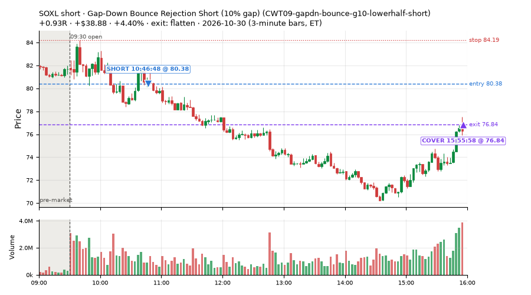
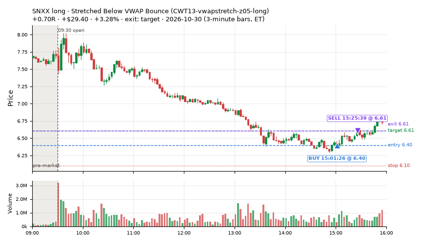
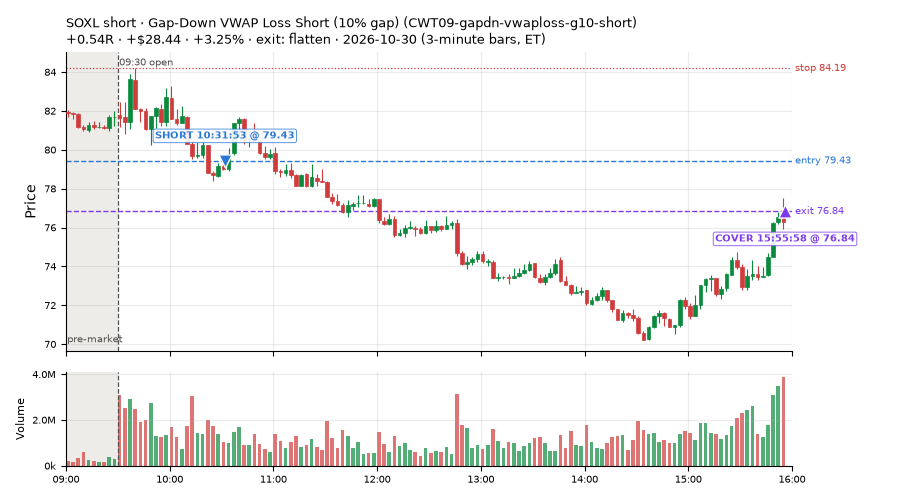
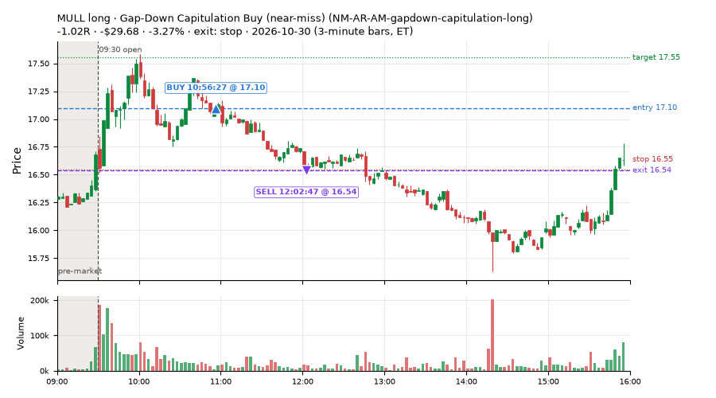
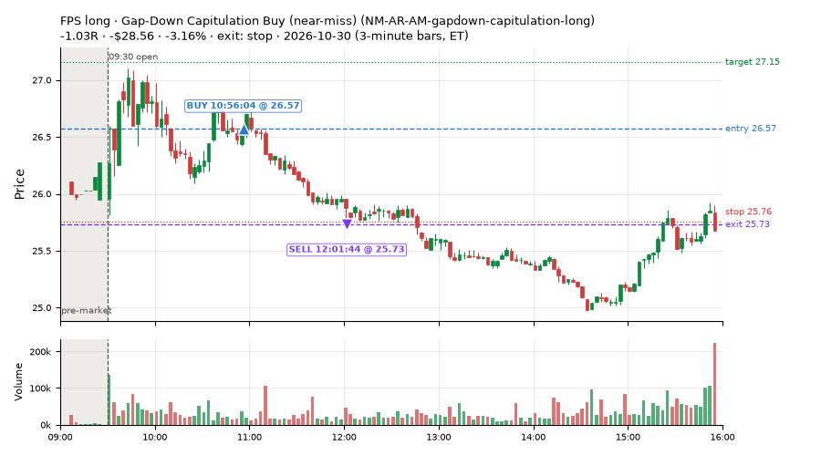
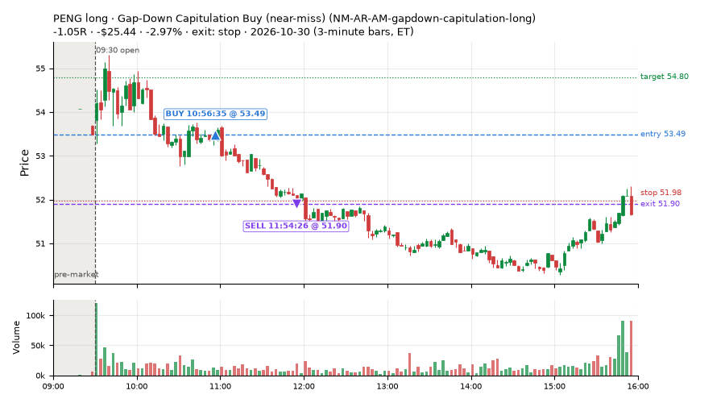
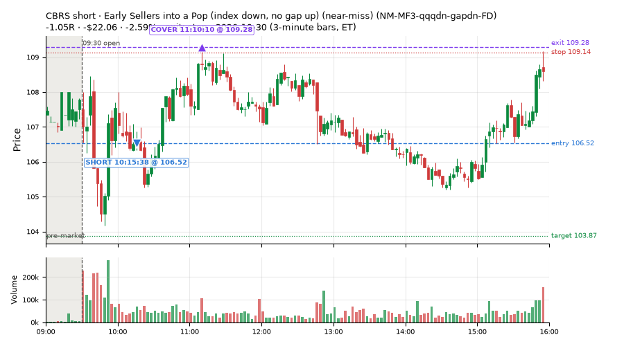
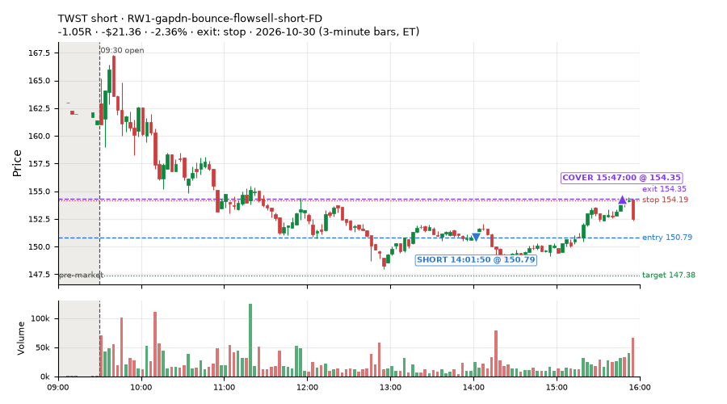

118 trades · win rate 56% · P/L $63.56
PROBATION: no live setup has passed both locked test periods. 10 owner-directed setups added 2026-10-08 (MarcoFlow top 5 + 5 new), untested live. RW6G1 (RW6 + VWAP band guard) added 2026-10-09, probation.

| Symbol | Setup | Side | In | Out | Entry | Exit | Exit reason | % gained | P/L |
|---|---|---|---|---|---|---|---|---|---|
| SOXL | Gap-Down Bounce Rejection Short (10% gap) (CWT09-gapdn-bounce-g10-lowerhalf-short) | short | 10:46 | 15:55 | 80.38 | 76.84 | flatten | +4.40% | $38.88 |
| SNXX | Stretched Below VWAP Bounce (CWT13-vwapstretch-z05-long) | long | 15:01 | 15:25 | 6.40 | 6.61 | target | +3.28% | $29.40 |
| SOXL | Gap-Down VWAP Loss Short (10% gap) (CWT09-gapdn-vwaploss-g10-short) | short | 10:31 | 15:55 | 79.43 | 76.84 | flatten | +3.25% | $28.44 |
| Symbol | Setup | Side | In | Out | Entry | Exit | Exit reason | % lost | P/L |
|---|---|---|---|---|---|---|---|---|---|
| MULL | NM-AR-AM-gapdown-capitulation-long | long | 10:56 | 12:02 | 17.10 | 16.54 | stop | -3.27% | $-29.68 |
| FPS | NM-AR-AM-gapdown-capitulation-long | long | 10:56 | 12:01 | 26.57 | 25.73 | stop | -3.16% | $-28.56 |
| PENG | NM-AR-AM-gapdown-capitulation-long | long | 10:56 | 11:54 | 53.49 | 51.90 | stop | -2.97% | $-25.44 |
| CBRS | NM-MF3-qqqdn-gapdn-FD | short | 10:15 | 11:10 | 106.52 | 109.28 | stop | -2.59% | $-22.06 |
| TWST | RW1-gapdn-bounce-flowsell-short-FD | short | 14:01 | 15:47 | 150.79 | 154.35 | stop | -2.36% | $-21.36 |








Signal to fill: median 1s, 90th percentile 2s (118 trades). Bars close each minute; the order follows the bar close.
Best excursion (MFE): median 0.41R; worst (MAE) median 0.82R. 26% of trades never got +0.25R in our favour; 0 reached +1R and still closed at or below 0.
| Symbol | Setup | Best R | Worst R | Closed R |
|---|---|---|---|---|
| TECL | CWT09-gapdn-bounce-g10-lowerhalf-short | +3.97 | -0.39 | +1.63 |
| HPQ | CWT09-gapdn-vwaploss-g10-short | +2.21 | -0.26 | +0.09 |
| SOXL | CWT09-gapdn-bounce-g10-lowerhalf-short | +2.66 | -0.26 | +0.93 |
| TWST | RW1-gapdn-bounce-flowsell-short-FD | +0.67 | -1.11 | -1.05 |
| TECL | CWT09-gapdn-vwaploss-g10-short | +2.55 | -0.74 | +0.88 |
| Entry time | Trades | Win | Avg R | P/L |
|---|---|---|---|---|
| 09:50-10:30 | 10 | 50% | -0.29 | $-30.16 |
| 10:30-11:30 | 27 | 48% | -0.17 | $49.43 |
| 11:30-13:00 | 11 | 45% | -0.32 | $0.99 |
| 13:00-14:00 | 18 | 61% | -0.12 | $48.90 |
| 14:00-16:00 | 52 | 62% | +0.00 | $-5.60 |
| Setup | Trades | Win | Avg R | Adj R (net of SPY) | P/L |
|---|---|---|---|---|---|
| Panic Flush Reversal (deep, 3x volume) (CWT05-flush-m075-v3-long) | 1.0 | 0% | -1.05 | -0.85 | $-12.47 |
| Gap-Down Bounce Rejection Short (10% gap) (CWT09-gapdn-bounce-g10-lowerhalf-short) | 4.0 | 100% | +1.01 | +0.84 | $109.35 |
| Gap-Down VWAP Loss Short (10% gap) (CWT09-gapdn-vwaploss-g10-short) | 5.0 | 100% | +0.53 | +0.47 | $78.37 |
| Stretched Below VWAP Bounce (CWT13-vwapstretch-z05-long) | 55.0 | 58% | -0.13 | +0.07 | $21.07 |
| Stretched Below VWAP Bounce (far) (CWT13-vwapstretch-z075-long) | 4.0 | 75% | +0.70 | +0.60 | $14.05 |
| Failed Prior-Day-Low Break Long (CWT14-failbrk-pdl-p10-long) | 15.0 | 47% | -0.29 | -0.45 | $-23.58 |
| Failed Prior-Day-Low Break Long (0.1 ATR, low volume) [fill] (CWT14-failbrk-pdl-p10-lowvol-long) | 10.0 | 40% | -0.36 | -0.56 | $-25.95 |
| * Shallow Nasdaq Dip, Breadth Turn (TQQQ) (near-miss) (LD2-qqq-dip015-breadthturn-tqqq-t05s1-long) | 1.0 | 0% | -1.00 | -0.85 | $-13.29 |
| Gap-Down Capitulation Buy (near-miss) (NM-AR-AM-gapdown-capitulation-long) | 5.0 | 0% | -1.04 | -0.87 | $-101.34 |
| Afternoon Higher-Low Long (near-miss) (NM-HL-T75-pm-long) | 7.0 | 100% | +0.43 | +0.43 | $74.04 |
| Early Sellers into a Pop (index down, no gap up) (near-miss) (NM-MF3-qqqdn-gapdn-FD) | 2.0 | 0% | -1.04 | -1.02 | $-35.69 |
| Big Loser VWAP Reclaim Fade (all day) (NS3-failed-vwap-reclaim-short-FD) | 3.0 | 33% | -0.25 | +0.05 | $-10.90 |
| NS5-sma50-flush-oversold-long-FD | 2.0 | 100% | +0.74 | +0.96 | $22.82 |
| RW1-gapdn-bounce-flowsell-short-FD | 3.0 | 33% | -0.37 | -0.58 | $-26.04 |
| RW4-ns3-adv150-short-FD | 1.0 | 0% | -0.56 | -0.16 | $-6.88 |
Market direction (SPY, beta 1) accounted for $-59.94 of today's $63.56; the rest ($123.50) came from the setups themselves. Avg R net of SPY: -0.04 (incl. a hedge leg's cost; report only).
46 setups live today. Today: 322 signals, 118 taken, 3 lost because another setup held the symbol (1%). Since 2026-10-12 (15 sessions): 8075 signals, 4019 taken, 669 lost to other setups (8%). Peak open positions today 59 of 400 slots. Earnings blackout removed 1872 symbols before scanning.
Simulated playing time (not live): 4041 what-if trades of signals not taken, avg -0.10R, 58% winners; of them 669 lost to another setup (avg -0.20R).
Silent: LD4-st4-breadthup-t1s05-long, LD8-spy-dip030-breadthturn-spxl-holdtr-long, LD1-ns1-breadthup-t05s1-long, NM-RWR1-exh150-gapdn-spyup-pm-short, CWT04-backside-lh-a25-short, CWT04-backside-vwaptest-a25-short · Crowded out: NS3-failed-vwap-reclaim-short-FD, MF5-flowsell-vwapup-rsi5hi · Starved: NS5-sma50-flush-oversold-long-FD, RW4-ns3-adv150-short-FD, exhaustion_short-FD
| Prio | Setup | Today sig / taken | Sessions | Signals / taken / trades | Taken/day | Expected/day | Lost to other setups | Lost to (setup n) | Top skip reasons | SIMULATED: not-taken n / avg R / win | Verdict |
|---|---|---|---|---|---|---|---|---|---|---|---|
| 1 | Big Loser VWAP Reclaim Fade, Morning, Wide Stop NS3V1-am-widestop-short | 0 / 0 | 6 | 24 / 16 / 16 | 2.67 | 5.30 | 2 | NS3V1-am-widestop-short 2 | not shortable / shorts off 4, symbol held by another setup 2, spread / quote / size 2 | 8 / -0.47R / 38% | slow 13.3 entries/week; ~4 weeks to 60 trades |
| 2 | Big Loser VWAP Reclaim Fade (all day) NS3-failed-vwap-reclaim-short-FD | 15 / 3 | 7 | 97 / 28 / 28 | 4.00 | 22.02 | 26 | NS3V1-am-widestop-short 20, NS3-failed-vwap-reclaim-short-FD 4, RW4-ns3-adv150-short-FD 4 | symbol held by another setup 26, not shortable / shorts off 23, spread / quote / size 17 | 69 / -0.28R / 38% | crowded-out 26 of 97 signals (27%) lost to setups already holding the symbol |
| 3 | * Oversold EMA Cross-Down with Breadth Turning Up (near-miss) LD4-st4-breadthup-t1s05-long | 0 / 0 | 8 | 0 / 0 / 0 | 0.00 | – | 0 | – | – | 0 / – | silent no signals in 8 session(s); no expected rate on file |
| 4 | * Oversold Slope Turn with Breadth Turning Up (near-miss) LD5-st2-breadthup-t05s1-long | 0 / 0 | 8 | 1 / 0 / 0 | 0.00 | – | 1 | NS3V1-am-widestop-short 1 | symbol held by another setup 1 | 1 / +0.51R / 100% | slow no entries yet |
| 5 | * SPY Dip of 0.30%, Breadth Turn (SPXL, trailing) (near-miss) LD8-spy-dip030-breadthturn-spxl-holdtr-long | 0 / 0 | 8 | 0 / 0 / 0 | 0.00 | – | 0 | – | – | 0 / – | silent no signals in 8 session(s); no expected rate on file |
| 6 | * Oversold Slope Turn after an SPY Dip-Turn (near-miss) LD3-st2-idxturn-t05s1-long | 0 / 0 | 8 | 1 / 0 / 0 | 0.00 | – | 1 | NS3V1-am-widestop-short 1 | symbol held by another setup 1 | 1 / +0.51R / 100% | slow no entries yet |
| 7 | * SPY Dip of 0.2 ATR, Breadth Turn (SPXL, trailing) (near-miss) LD6-spy-dip020atr-breadthturn-spxl-holdtr-long | 0 / 0 | 8 | 2 / 2 / 2 | 0.25 | – | 0 | – | – | 0 / – | slow 1.2 entries/week; ~48 weeks to 60 trades |
| 8 | * Oversold Pop with Breadth Turning Up (near-miss) LD1-ns1-breadthup-t05s1-long | 0 / 0 | 8 | 0 / 0 / 0 | 0.00 | – | 0 | – | – | 0 / – | silent no signals in 8 session(s); no expected rate on file |
| 9 | * Shallow Nasdaq Dip, Breadth Turn (TQQQ) (near-miss) LD2-qqq-dip015-breadthturn-tqqq-t05s1-long | 1 / 1 | 8 | 4 / 4 / 4 | 0.50 | – | 0 | – | – | 0 / – | slow 2.5 entries/week; ~24 weeks to 60 trades |
| 10 | * Oversold Pop after an SPY Dip-Turn (trailing) (near-miss) LD7-ns1-idxturn-holdtr-long | 0 / 0 | 8 | 1 / 1 / 1 | 0.12 | – | 0 | – | – | 0 / – | slow 0.6 entries/week; ~96 weeks to 60 trades |
| 11 | Monday Weak-RS NS3 Short (near-miss) NM-RWN5-ns3-mon-weakrs-short | 0 / 0 | 10 | 6 / 5 / 5 | 0.50 | – | 0 | – | spread / quote / size 1 | 1 / -1.02R / 0% | slow 2.5 entries/week; ~24 weeks to 60 trades |
| 12 | Early NS3 Short While QQQ Up (near-miss) NM-RWR3-ns3-qqqup-early-short | 0 / 0 | 10 | 3 / 2 / 2 | 0.20 | – | 0 | – | spread / quote / size 1 | 1 / -1.02R / 0% | slow 1.0 entries/week; ~60 weeks to 60 trades |
| 13 | Early NS3 Short While SPY Up (near-miss) NM-RWN3-ns3-spyup-early-short | 0 / 0 | 10 | 5 / 3 / 3 | 0.30 | – | 0 | – | not shortable / shorts off 1, spread / quote / size 1 | 2 / -0.08R / 50% | slow 1.5 entries/week; ~40 weeks to 60 trades |
| 14 | Late-Day ETF Dip Buy (near-miss) NM-ETF-late-dip-di-long | 0 / 0 | 10 | 8 / 7 / 7 | 0.70 | – | 0 | – | spread / quote / size 1 | 1 / +0.75R / 100% | slow 3.5 entries/week; ~17 weeks to 60 trades |
| 15 | NS2 Up-3 Short, QQQ Up, Slope Down (near-miss) NM-RWR4-ns2-up3-qqqup-slopedn-short | 0 / 0 | 10 | 6 / 5 / 5 | 0.50 | – | 0 | – | not shortable / shorts off 1 | 1 / -1.04R / 0% | slow 2.5 entries/week; ~24 weeks to 60 trades |
| 16 | Afternoon Exhaustion Short, Gap-Down, SPY Up (near-miss) NM-RWR1-exh150-gapdn-spyup-pm-short | 0 / 0 | 10 | 0 / 0 / 0 | 0.00 | – | 0 | – | – | 0 / – | silent no signals in 10 session(s); no expected rate on file |
| 17 | NS2 Short, SPY Up 0.5%, Not Friday (near-miss) NM-RWN4-ns2-spyup05-notfri-short | 0 / 0 | 10 | 9 / 8 / 8 | 0.80 | – | 0 | – | not shortable / shorts off 1 | 1 / -1.04R / 0% | slow 4.0 entries/week; ~15 weeks to 60 trades |
| 18 | Gap-Down Capitulation Buy (near-miss) NM-AR-AM-gapdown-capitulation-long | 11 / 5 | 10 | 56 / 38 / 38 | 3.80 | – | 0 | – | spread / quote / size 18 | 18 / -0.26R / 39% | ok 19.0 entries/week |
| 19 | Quiet Downtrend Bounce Short (near-miss) NM-AMS-N1-quiet-morning-short | 0 / 0 | 10 | 2 / 1 / 1 | 0.10 | – | 1 | NM-AR-AM-gapdown-capitulation-long 1 | symbol held by another setup 1 | 1 / +0.51R / 100% | slow 0.5 entries/week; ~120 weeks to 60 trades |
| 20 | Gap-Down Reclaim Fade, Afternoon (near-miss) NM-PM-gapdn-above-pdh-rvol-short | 0 / 0 | 10 | 2 / 2 / 2 | 0.20 | – | 0 | – | – | 0 / – | slow 1.0 entries/week; ~60 weeks to 60 trades |
| 21 | Gap-Down VWAP Loss Short, Slope Filter (near-miss) NM1-cwt09-g10-vwaploss-short | 20 / 0 | 10 | 42 / 4 / 4 | 0.40 | – | 0 | – | not shortable / shorts off 34, spread / quote / size 3, other 1 | 38 / +0.16R / 58% | slow 2.0 entries/week; ~30 weeks to 60 trades |
| 22 | Afternoon Higher-Low Long (near-miss) NM-HL-T75-pm-long | 9 / 7 | 10 | 22 / 19 / 19 | 1.90 | – | 2 | CWT09-gapdn-vwaploss-g10-short 2, CWT09-gapdn-bounce-g10-lowerhalf-short 2 | symbol held by another setup 2, spread / quote / size 1 | 3 / +0.49R / 100% | slow 9.5 entries/week; ~6 weeks to 60 trades |
| 23 | Backside Lower-High Short (big runner) CWT04-backside-lh-a25-short | 0 / 0 | 15 | 0 / 0 / 0 | 0.00 | – | 0 | – | – | 0 / – | silent no signals in 15 session(s); no expected rate on file |
| 24 | Backside VWAP-Test Short (big runner) CWT04-backside-vwaptest-a25-short | 0 / 0 | 15 | 0 / 0 / 0 | 0.00 | – | 0 | – | – | 0 / – | silent no signals in 15 session(s); no expected rate on file |
| 25 | Gap-Down VWAP Loss Short (10% gap) CWT09-gapdn-vwaploss-g10-short | 72 / 5 | 15 | 132 / 11 / 11 | 0.73 | – | 0 | – | not shortable / shorts off 116, spread / quote / size 3, daily loss cap 1 | 121 / +0.01R / 58% | slow 3.7 entries/week; ~16 weeks to 60 trades |
| 26 | Panic Flush Reversal (deep, 5x volume) CWT05-flush-m075-v5-long | 0 / 0 | 15 | 7 / 4 / 4 | 0.27 | – | 0 | – | daily loss cap 2, spread / quote / size 1 | 3 / +0.42R / 100% | slow 1.3 entries/week; ~45 weeks to 60 trades |
| 27 | NS5-sma50-flush-oversold-long-FD NS5-sma50-flush-oversold-long-FD | 2 / 2 | 8 | 8 / 7 / 7 | 0.88 | 6.32 | 0 | – | spread / quote / size 1 | 1 / -0.01R / 0% | starved 0.88 entries/day vs ~6.32 expected |
| 28 | Gap-Down Bounce Rejection Short (10% gap) CWT09-gapdn-bounce-g10-lowerhalf-short | 50 / 4 | 15 | 137 / 17 / 17 | 1.13 | – | 0 | – | not shortable / shorts off 112, spread / quote / size 5, price through stop/target 1 | 120 / -0.23R / 37% | slow 5.7 entries/week; ~11 weeks to 60 trades |
| 29 | Backside Lower-High Short CWT04-backside-lh-a15-short | 1 / 0 | 15 | 6 / 2 / 2 | 0.13 | – | 0 | – | spread / quote / size 2, daily loss cap 1, not shortable / shorts off 1 | 4 / +0.43R / 75% | slow 0.7 entries/week; ~90 weeks to 60 trades |
| 30 | Panic Flush Reversal (5x volume) CWT05-flush-m05-v5-long | 0 / 0 | 15 | 11 / 6 / 6 | 0.40 | – | 1 | CWT14-failbrk-orl-p10-long 1 | daily loss cap 2, spread / quote / size 2, symbol held by another setup 1 | 5 / +0.51R / 100% | slow 2.0 entries/week; ~30 weeks to 60 trades |
| 31 | Panic Flush Reversal (deep, 3x volume) CWT05-flush-m075-v3-long | 1 / 1 | 15 | 18 / 12 / 12 | 0.80 | – | 0 | – | daily loss cap 3, spread / quote / size 2, broker rejected 1 | 6 / +0.17R / 83% | slow 4.0 entries/week; ~15 weeks to 60 trades |
| 32 | Spike-Pullback Flag Breakout CWT12-flag-s1-long | 0 / 0 | 15 | 18 / 14 / 14 | 0.93 | – | 0 | – | daily loss cap 2, spread / quote / size 1, broker rejected 1 | 4 / -0.16R / 75% | slow 4.7 entries/week; ~13 weeks to 60 trades |
| 33 | Backside VWAP-Test Short CWT04-backside-vwaptest-a15-short | 1 / 0 | 15 | 14 / 7 / 7 | 0.47 | – | 1 | CWT14-failbrk-pdl-p05-lowvol-long 1 | spread / quote / size 3, not shortable / shorts off 2, symbol held by another setup 1 | 7 / +0.25R / 43% | slow 2.3 entries/week; ~26 weeks to 60 trades |
| 34 | Early Sellers into a Pop (index down, no gap up) (near-miss) NM-MF3-qqqdn-gapdn-FD | 3 / 2 | 8 | 39 / 24 / 24 | 3.00 | 4.90 | 4 | NM-AR-AM-gapdown-capitulation-long 4 | spread / quote / size 6, not shortable / shorts off 5, symbol held by another setup 4 | 15 / +0.18R / 60% | ok 15.0 entries/week |
| 35 | Stretched Above VWAP Fade (far) CWT13-vwapstretch-z075-short | 1 / 0 | 15 | 30 / 15 / 15 | 1.00 | – | 0 | – | not shortable / shorts off 9, daily loss cap 4, spread / quote / size 1 | 15 / -0.52R / 27% | slow 5.0 entries/week; ~12 weeks to 60 trades |
| 36 | RW1-gapdn-bounce-flowsell-short-FD RW1-gapdn-bounce-flowsell-short-FD | 6 / 3 | 8 | 68 / 41 / 41 | 5.12 | 17.10 | 4 | NM-AR-AM-gapdown-capitulation-long 1, NM-HL-T75-pm-long 1, CWT12-coil-k4-long 1 | daily loss cap 10, spread / quote / size 8, not shortable / shorts off 5 | 27 / +0.60R / 82% | ok 25.6 entries/week |
| 37 | MF5-flowsell-vwapup-rsi5hi-FD MF5-flowsell-vwapup-rsi5hi-FD | 0 / 0 | 8 | 47 / 33 / 33 | 4.12 | 15.47 | 1 | NM-AR-AM-gapdown-capitulation-long 1 | spread / quote / size 9, not shortable / shorts off 4, symbol held by another setup 1 | 14 / +0.20R / 57% | ok 20.6 entries/week |
| 38 | RW4-ns3-adv150-short-FD RW4-ns3-adv150-short-FD | 1 / 1 | 8 | 31 / 20 / 20 | 2.50 | 17.34 | 7 | NS3-failed-vwap-reclaim-short-FD 6, RW4-ns3-adv150-short-FD 6, NM-AR-AM-gapdown-capitulation-long 1 | symbol held by another setup 7, spread / quote / size 3, not shortable / shorts off 1 | 11 / -0.43R / 18% | starved 2.50 entries/day vs ~17.34 expected |
| 39 | Sellers into Strength (all day) MF5-flowsell-vwapup-rsi5hi | 0 / 0 | 8 | 21 / 0 / 0 | 0.00 | 15.47 | 16 | MF5-flowsell-vwapup-rsi5hi-FD 15, NM-AR-AM-gapdown-capitulation-long 1 | symbol held by another setup 16, spread / quote / size 3, not shortable / shorts off 2 | 21 / -0.12R / 48% | crowded-out 16 of 21 signals (76%) lost to setups already holding the symbol |
| 40 | exhaustion_short-FD exhaustion_short-FD | 2 / 0 | 8 | 85 / 59 / 59 | 7.38 | 64.64 | 3 | CWT12-coil-k4-long 3 | not shortable / shorts off 15, spread / quote / size 8, symbol held by another setup 3 | 26 / -0.12R / 46% | starved 7.38 entries/day vs ~64.64 expected |
| 41 | Stretched Below VWAP Bounce (far) CWT13-vwapstretch-z075-long | 6 / 4 | 15 | 47 / 14 / 14 | 0.93 | – | 0 | – | daily loss cap 28, spread / quote / size 3, other 2 | 33 / -0.32R / 42% | slow 4.7 entries/week; ~13 weeks to 60 trades |
| 42 | Stretched Below VWAP Bounce CWT13-vwapstretch-z05-long | 79 / 55 | 14 | 307 / 117 / 117 | 8.36 | – | 2 | CWT14-failbrk-pdh-p05-lowvol-short 1, CWT09-gapdn-vwaploss-g10-short 1, CWT09-gapdn-bounce-g10-lowerhalf-short 1 | daily loss cap 152, other 18, spread / quote / size 17 | 189 / -0.17R / 58% | ok 41.8 entries/week |
| 43 | Early Sellers, Mid-High RSI MF2-open-rsimidhi-flowsell | 0 / 0 | 3 | 2 / 1 / 1 | 0.33 | 1.30 | 0 | – | not shortable / shorts off 1 | 1 / -1.06R / 0% | slow 1.7 entries/week; ~36 weeks to 60 trades |
| 44 | Afternoon VWAP Reclaim Fade NS4-pm-vwap-reclaim-oversold-short | 0 / 0 | 3 | 10 / 8 / 8 | 2.67 | 3.05 | 0 | – | spread / quote / size 2 | 2 / +0.44R / 50% | slow 13.3 entries/week; ~4 weeks to 60 trades |
| 45 | Failed Prior-Day-Low Break Long (0.1 ATR, low volume) [fill] CWT14-failbrk-pdl-p10-lowvol-long | 17 / 10 | 10 | 215 / 142 / 142 | 14.20 | – | 7 | CWT14-failbrk-pdl-p10-long 3, CWT14-failbrk-pdl-p05-lowvol-long 2, CWT09-gapdn-bounce-g5-lowerhalf-short 1 | spread / quote / size 49, daily loss cap 12, symbol held by another setup 7 | 70 / -0.11R / 63% | ok 71.0 entries/week |
| 46 | Failed Prior-Day-Low Break Long CWT14-failbrk-pdl-p10-long | 24 / 15 | 15 | 615 / 399 / 399 | 26.60 | – | 22 | CWT14-failbrk-pdl-p10-lowvol-long 15, CWT14-failbrk-pdl-p05-lowvol-long 4, CWT14-failbrk-pdl-p05-long 2 | spread / quote / size 138, daily loss cap 31, symbol held by another setup 22 | 213 / -0.06R / 65% | ok 133.0 entries/week |
Every trade is attached as a CSV you can open and edit in Excel or Google Sheets. Live page: https://misiti15.github.io/MCF/live/